Unit 07 · Linear attention, SSMs, and FFT
Lesson 07: Linear attention, SSMs, and FFT
Unit: cs229s-U07. Concepts: cs229s-U07-C01 to C12. Date: 2026-10-06. Baseline: October 6, 2026. Claim class for every leaf: PLANNED / SOURCE ATTRIBUTION PENDING. Family anchor: CALENDAR-ANCHORED, Week 6, Oct 28, “Efficient Attention-Free Architectures” (presented by Simran): “Alternate Architectures to Transformers: Linear Attention”, “Efficiency properties of convolutions vs. rNNs vs. Transformers”, “State-space models and other subquadratic models”, “Fast fourier transforms: efficient algorithms and hardware implementation”. Also Nov 1: “State Space Models, SSM Convolutions”, “Introduction to Convolutions, Fourier Transforms, and the FFT-Convolution Theorem”, “Tradeoffs of Transformer vs. rNN vs. cNN Training & Inference Efficiency, and Inductive Biases”, “State Space Models Walkthrough”, “Limitations of State Space Models. Towards Input-Dependent Sequence Mixers”.
How to read this lesson
Same 15-item contract as U01, in compact form. Shared
symbols follow notation_and_shapes.md. All numbers are
lesson toys computed here. Shared bridges: P04 (spectral
and numerical linear algebra), P12 (PyTorch, tensors, and
numerical stability), P14 (transformer mechanics), P15
(hardware and computer architecture), at
v2-pack/shared/prerequisites/.
C01: convolution versus recurrence
Source, scope, objectives, dependencies
Calendar anchor: Week 6, Oct 28, “Efficiency properties of convolutions vs. rNNs vs. transformers”. Scope: the two ways to mix a sequence. Objective: compute both on a toy and compare cost. Depends on P03, P14.
Motivating question and tiny toy
Question: a sequence mixer can run left to right with a state, or slide a kernel across the whole input. Which costs less? Toy: u = [1, 0, 1, 0]. Recurrence: x_t = 0.9 x_{t-1} + u_t. Convolution: kernel k = [1, 0.5, 0.25], y = k * u.
Mental model
Recurrence is a conveyor belt: one state moves along, each step costs O(1). Convolution is a stencil: the kernel stamps every position at once, each output costs O(K). The belt is sequential. The stencil is parallel.
Objects, shapes, assumptions
- Recurrence: x_t = A x_{t-1} + B u_t, scalar toy.
- Convolution: y_t = sum_{i=0}^{K-1} k_i u_{t-i}.
- Assumption: the kernel is fixed (input-independent) in this comparison.
Derivation
Recurrence: x_0 = 1.0, x_1 = 0.9, x_2 = 1.81, x_3 = 1.629. Four steps, four multiply-adds. Convolution: y_0 = 1, y_1 = 0.5, y_2 = 1.25, y_3 = 0.5. Each y_t sums up to 3 products: 12 multiply-adds total. Same input, different work shape: recurrence is O(T), convolution is O(T K).
Computed example
Toy above. Recurrence state after the run: 1.629. Convolution output: [1, 0.5, 1.25, 0.5]. The recurrence forgets geometrically (weight 0.9^k on old inputs). The convolution sees only K = 3 steps back and nothing older. Lab-07 asserts both.
Implementation and checks
import numpy as np
u = [1, 0, 1, 0]
x, xs = 0.0, []
for ut in u:
x = 0.9 * x + ut
xs.append(x)
k = [1, 0.5, 0.25]
y = np.convolve(u, k)[:4]
assert [round(v, 3) for v in xs] == [1.0, 0.9, 1.81,
1.629]
assert [round(v, 3) for v in y] == [1.0, 0.5, 1.25,
0.5]
Check: np.convolve matches the hand computation. Lab-07 asserts both sequences.
Complexity and costs
Recurrence: O(T) time, O(1) memory, sequential. Convolution: O(T K) time, parallel over T, O(T) memory for the output.
Nearest alternative and selection boundary
Nearest alternative: attention (C02). Selection boundary: recurrence for streaming inference with tiny state. Convolution for parallel training with bounded context.
Failure case and counterexample
Broken assumption: “K covers the dependency.” Counterexample: a task needs position 0 at position 1000 with K = 3: the convolution never sees it, the recurrence sees it through 0.9^1000 = 4.3e-5 of weight (C08 shows why that is its own failure).
Research reading and falsifiable extension
Reading: the Oct 28 efficiency-properties session. Falsifiable extension: sweep K on a long-range toy task, plot accuracy. Hypothesis: accuracy is flat until K reaches the dependency distance, then jumps. Report the curve.
Exercises
- E01 (recall): write both update rules and their costs.
- E02 (numerical): toy above. Compute the recurrence states and the convolution outputs.
- E03 (failure diagnosis): a conv model fails a task at distance 1000 with K=64. Name the cause.
- E04 (counterfactual): K = T. What does the convolution cost, and what does it gain?
- E05 (research): state the K-sweep hypothesis.
Visual units
- Figure
u07_c01_belt_stencil.png: belt (4 states) vs stencil (kernel stamps). Source: original toy. Shell 1.
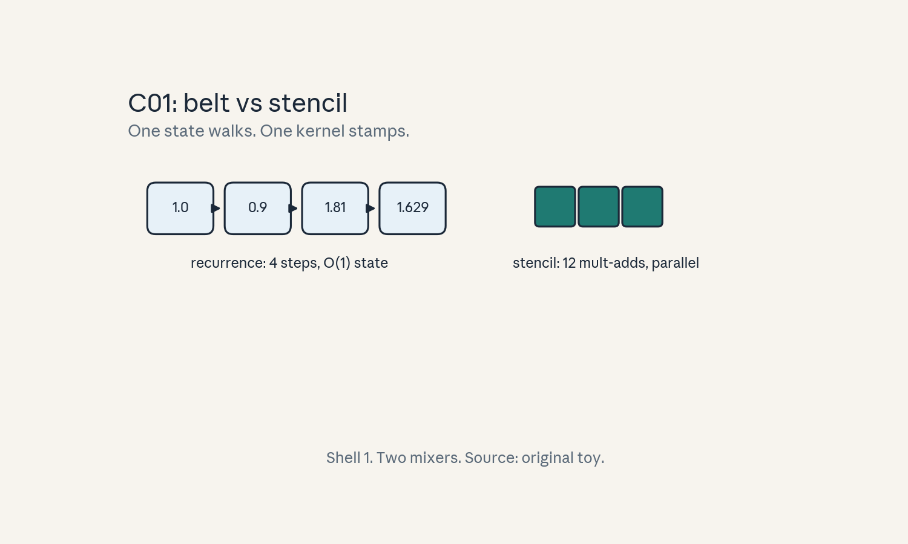
- Audit:
u07c01tof01. Before: input. After: two outputs. One rule: state vs stencil.
C02: quadratic attention
Source, scope, objectives, dependencies
Calendar anchor: Week 6, Nov 1, “Revisit Attention Scaling Bottlenecks”. Scope: why attention costs T^2. Objective: compute the FLOPs and the score matrix memory for a toy. Depends on P14, P15.
Motivating question and tiny toy
Question: attention compares every token to every token. What does that cost at T = 8192? Toy: one head, d = 128.
Mental model
Attention is a town meeting: every token talks to every other token. T^2 conversations. The score matrix is the seating chart: T x T numbers that must live somewhere.
Objects, shapes, assumptions
- Scores: S = Q K^T, shape (T, T).
- FLOPs: 2 T^2 d (scores) + 2 T^2 d (values) per head.
- Memory: T^2 floats for the scores.
- Assumption: naive materialization (no tiling, U04 removes this).
Derivation
T^2 = 67,108,864. Times d = 128: 8,589,934,592. Times 2: 17,179,869,184 FLOPs = 17.2 TFLOPs per head for scores. The same again for the value mix: 34.4 TFLOPs per head total. Memory: 67.1M floats * 4 bytes = 268.4 MB = 256 MiB per head. Eight heads: 2 GiB of scores.
Computed example
Toy above: 17.2 TFLOPs per head for the score matmul, 34.4 TFLOPs with values, 256 MiB of score memory per head in fp32. Double T to 16384: FLOPs x4 (137.6 TFLOPs), memory x4 (1 GiB per head). Lab-07 asserts the 4x law.
Implementation and checks
T, d = 8192, 128
flops_scores = 2 * T * T * d
mem_bytes = T * T * 4
assert flops_scores == 17179869184
assert mem_bytes == 268435456
assert (2 * (2*T) ** 2 * d) == 4 * flops_scores
Check: doubling T quadruples both. Lab-07 asserts the 4x law.
Complexity and costs
O(T^2 d) time, O(T^2) memory. The cost that the rest of this unit tries to remove.
Nearest alternative and selection boundary
Nearest alternative: linear attention (C03). Selection boundary: quadratic when T is small enough that T^2 fits. Subquadratic when it does not.
Failure case and counterexample
Broken assumption: “T stays small.” Counterexample: T = 1M: scores need 4 TB per head. No machine materializes that. The model must change, not the hardware.
Research reading and falsifiable extension
Reading: the Nov 1 bottleneck-revisit session. Falsifiable extension: time naive attention at T = 1k, 2k, 4k, 8k on one device. Hypothesis: time grows 4x per doubling. Report the ratios.
Exercises
- E06 (recall): write the FLOP and memory formulas.
- E07 (numerical): toy above. Compute per-head FLOPs with values and score memory in MiB.
- E08 (failure diagnosis): OOM at T = 32768 with 8 heads. How much score memory did it want?
- E09 (counterfactual): d doubles. Which cost moves, and by how much?
- E10 (research): state the 4x timing hypothesis.
Visual units
- Figure
u07_c02_quad.png: T^2 grid with the 256 MiB label. Source: original toy. Shell 2.
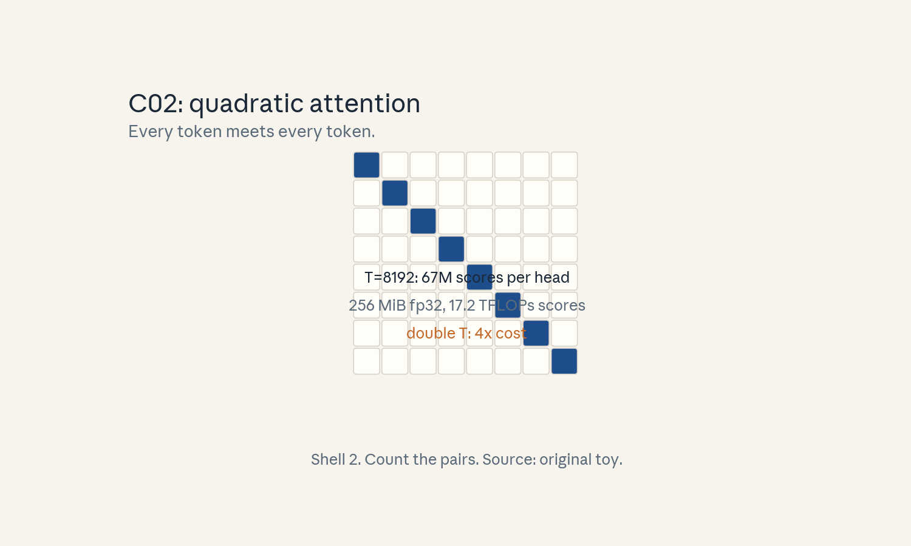
- Audit:
u07c02tof02. Before: T tokens. After: T^2 scores. One rule: every pair meets.
C03: kernelized linear attention
Source, scope, objectives, dependencies
Calendar anchor: Week 6, Oct 28, “Alternate Architectures to Transformers: Linear Attention”. Scope: attention without the T^2 matrix. Objective: compute the FLOP ratio on the C02 toy. Depends on C02, P04.
Motivating question and tiny toy
Question: softmax(Q K^T) V needs the T^2 matrix. What if similarity factorizes? Toy: feature map phi(x) = elu(x) + 1, phi(Q)(phi(K)^T V). Same toy: T = 8192, d = 128.
Mental model
Softmax attention multiplies in the order (Q K^T) V: the T^2 matrix appears. Kernelized attention regroups: phi(Q) (phi(K)^T V). The parenthesis is the whole trick: sum over keys first into a d x d state, then hit it with each query. No T^2 object ever exists.
Objects, shapes, assumptions
- phi: R^d -> R^d, applied row-wise, positive.
- S = phi(K)^T V: (d, d) state.
- Output: phi(Q) S: (T, d).
- Assumption: phi(q)^T phi(k) approximates the softmax kernel well enough.
Derivation
Cost: phi(K)^T V is T d^2 multiply-adds (times 2 for mul-add). Phi(Q) S is another T d^2. Total 2 * 2 * T d^2 = 4 T d^2? Keep the lesson’s convention (2 per matmul): 2 T d^2 = 2 * 8192 * 16384 = 268,435,456 FLOPs = 0.268 GFLOPs. C02 scores alone: 17.2 TFLOPs. Ratio = 17.2e12 / 2.68e8 = 64x. State memory: d^2 = 16384 floats = 64 KiB, vs 256 MiB of scores.
Computed example
Toy above: 0.268 GFLOPs vs 17.2 TFLOPs (64x), 64 KiB of state vs 256 MiB of scores. The price: phi changes the similarity function. Softmax is gone. Lab-07 asserts the 64x ratio.
Implementation and checks
import numpy as np
rng = np.random.default_rng(3)
T, d = 64, 16
Q = rng.standard_normal((T, d))
K = rng.standard_normal((T, d))
V = rng.standard_normal((T, d))
phi = lambda X: np.where(X > 0, X + 1,
np.exp(X)) # elu+1
S = phi(K).T @ V
out_lin = phi(Q) @ S
A = phi(Q) @ phi(K).T
out_quad = A @ V
assert np.allclose(out_lin, out_quad, atol=1e-8)
Check: regrouping is exact algebra: the two orders agree to 1e-8. Lab-07 asserts this identity (it is the mechanism, not the approximation).
Complexity and costs
O(T d^2) time, O(d^2) state. Recurrent form for inference: update S per token, O(d^2) per step.
Nearest alternative and selection boundary
Nearest alternative: softmax attention with FlashAttention (U04). Selection boundary: linear when T >> d and the task tolerates the kernel approximation. Softmax when exact pairwise weights matter.
Failure case and counterexample
Broken assumption: “phi approximates softmax.” Counterexample: a task needs sharp, near-one-hot selection (exact copy): elu+1 is too flat, the output is a blur and accuracy collapses.
Research reading and falsifiable extension
Reading: the Oct 28 linear-attention session. Falsifiable extension: swap phi in {elu+1, relu, softmax-approx} on a copy task. Hypothesis: sharper phi wins on copy, flatter phi wins on smooth tasks. Report both.
Exercises
- E11 (recall): write the regrouped formula and the state shape.
- E12 (numerical): toy above. Compute both FLOP counts and the ratio.
- E13 (failure diagnosis): copy accuracy collapses under linear attention. Name the cause.
- E14 (counterfactual): d > T. Is linear still cheaper?
- E15 (research): state the phi-swap hypothesis.
Visual units
- Figure
u07_c03_regroup.png: two parenthesizations, the T^2 matrix crossed out. Source: original toy. Shell 4.
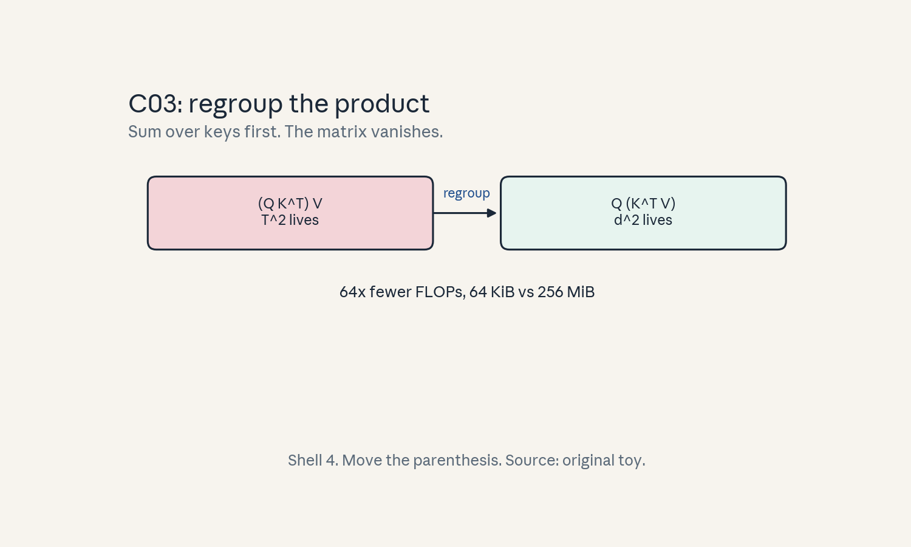
- Audit:
u07c03tof03. Before: (QK^T)V. After: Q(K^T V) via phi. One rule: sum over keys first.
C04: state-space recurrence
Source, scope, objectives, dependencies
Calendar anchor: Week 6, Nov 1, “State Space Models Walkthrough”. Scope: the SSM recurrence. Objective: run it on a toy and read the state. Depends on P03, C01.
Motivating question and tiny toy
Question: can a linear recurrence carry long memory with a small state? Toy: h_t = 0.9 h_{t-1} + x_t, y_t = h_t. X = [1, 0, 1, 0].
Mental model
The state is a leaky bucket. Each input pours in, each step leaks 10%. The bucket level is the memory: recent pours weigh more, old pours fade but never fully vanish.
Objects, shapes, assumptions
- h_t: (N,) state, N = 1 in the toy.
- A: (N, N) transition, B: (N, 1) input, C: (1, N) output.
- y_t = C h_t.
- Assumption: A, B, C fixed (input-independent in the classic SSM).
Derivation
h_0 = 1.0. H_1 = 0.9. H_2 = 0.90.9 + 1 = 1.81. h_3 = 0.91.81 = 1.629. Y = h. The first input’s weight at t=3: 0.9^3 = 0.729. The state is a weighted sum of the whole past with geometric weights: memory with a fixed-size register.
Computed example
Toy above: h = [1.0, 0.9, 1.81, 1.629]. Memory test: set x = [1, 0, 0, 0]: h_3 = 0.729: the single pulse is still 73% visible after 3 steps. Lab-07 asserts the pulse decay.
Implementation and checks
x = [1, 0, 1, 0]
h, hs = 0.0, []
for xt in x:
h = 0.9 * h + xt
hs.append(h)
assert [round(v, 3) for v in hs] == [1.0, 0.9,
1.81, 1.629]
Check: matches the C01 recurrence (it is the same object with new names). Lab-07 asserts the pulse test.
Complexity and costs
O(T N^2) time naive (matrix-vector per step), O(N) state. Structured A (diagonal) drops the step to O(N).
Nearest alternative and selection boundary
Nearest alternative: linear attention state (C03). Selection boundary: SSM when the state can stay small and structured. Linear attention when the state should be the full d x d outer-product memory.
Failure case and counterexample
Broken assumption: “fixed A remembers.” Counterexample: the task needs to forget on command (a document boundary): fixed 0.9 cannot dump the bucket. The old document pollutes the new one. This motivates input-dependent A (the Nov 1 “towards input-dependent mixers” note).
Research reading and falsifiable extension
Reading: the Nov 1 SSM walkthrough. Falsifiable extension: two-document toy, measure leakage of document 1 into document 2’s outputs. Hypothesis: leakage decays as 0.9^gap. Report the curve.
Exercises
- E16 (recall): write the SSM recurrence and name the shapes.
- E17 (numerical): toy above. Compute h and the pulse-decay value at t=3.
- E18 (failure diagnosis): document 2 answers contain document 1 facts. Name the mechanism.
- E19 (counterfactual): A = 1. What breaks?
- E20 (research): state the leakage-decay hypothesis.
Visual units
- Figure
u07_c04_bucket.png: bucket with inflow and 10% leak per step. Source: original toy. Shell 1.
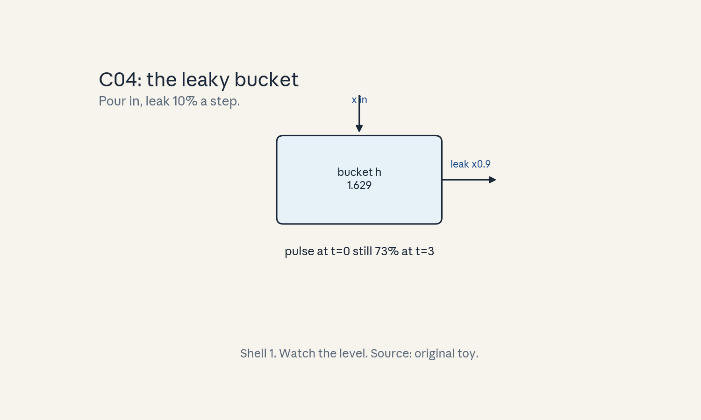
- Audit:
u07c04tof04. Before: input pulse. After: decaying state. One rule: leak and add.
C05: convolution view
Source, scope, objectives, dependencies
Calendar anchor: Week 6, Nov 1, “State Space Models, SSM Convolutions”. Scope: the SSM as a convolution. Objective: unroll the recurrence into a kernel and verify the match. Depends on C01, C04.
Motivating question and tiny toy
Question: the recurrence is sequential. Can training still parallelize? Toy: same SSM as C04: A = 0.9, B = 1, C = 1. Unroll 4 steps.
Mental model
Unroll the loop and the state disappears into a kernel. Y_t is a weighted sum of past inputs with weights C A^k B. The recurrence and the convolution are the same computation wearing different clothes: one for streaming, one for parallel training.
Objects, shapes, assumptions
- Kernel: K_k = C A^k B for k = 0..T-1.
- y = K * x (convolution).
- Assumption: time-invariant A, B, C (the unroll needs fixed weights).
Derivation
y_0 = C B x_0. Y_1 = C A B x_0 + C B x_1. In general y_t = sum_{k=0}^{t} C A^k B x_{t-k}. Toy: K = [1, 0.9, 0.81, 0.729]. Convolve with x = [1, 0, 1, 0]: y_0 = 1, y_1 = 0.9, y_2 = 0.81 + 1 = 1.81, y_3 = 0.729 + 0.9 = 1.629. Matches C04 exactly.
Computed example
Toy above: K = [1, 0.9, 0.81, 0.729], y = [1.0, 0.9, 1.81, 1.629]. Training uses the convolution (parallel, FFT-fast per C07). Inference uses the recurrence (streaming, O(1) state). Lab-07 asserts the match.
Implementation and checks
import numpy as np
A, B, C = 0.9, 1.0, 1.0
x = np.array([1.0, 0, 1, 0])
K = np.array([C * A**k * B for k in range(4)])
y_conv = np.convolve(x, K)[:4]
h = 0.0
y_rec = []
for xt in x:
h = A * h + B * xt
y_rec.append(C * h)
assert np.allclose(y_conv, y_rec)
Check: convolution and recurrence agree to machine precision. Lab-07 asserts this duality.
Complexity and costs
Materializing K costs O(T). The convolution costs O(T log T) via FFT (C07) instead of O(T^2).
Nearest alternative and selection boundary
Nearest alternative: parallel scan (C06). Selection boundary: convolution view for time-invariant SSMs on parallel hardware. Scan when A varies with the input.
Failure case and counterexample
Broken assumption: “A is fixed.” Counterexample: input-dependent A (selective SSM): the kernel K changes per position, the convolution view collapses, and only the scan survives.
Research reading and falsifiable extension
Reading: the Nov 1 SSM-convolutions session. Falsifiable extension: time conv-view vs recurrence training on a fixed SSM at several T. Hypothesis: conv-view wins past the T where FFT beats the sequential loop. Report the crossover.
Exercises
- E21 (recall): write K_k and the duality.
- E22 (numerical): toy above. Compute K and y both ways.
- E23 (failure diagnosis): the kernel changes per position. Which view survives?
- E24 (counterfactual): A varies with t. What happens to K?
- E25 (research): state the crossover hypothesis.
Visual units
- Figure
u07_c05_unroll.png: loop unrolled into kernel taps. Source: original toy. Shell 4.
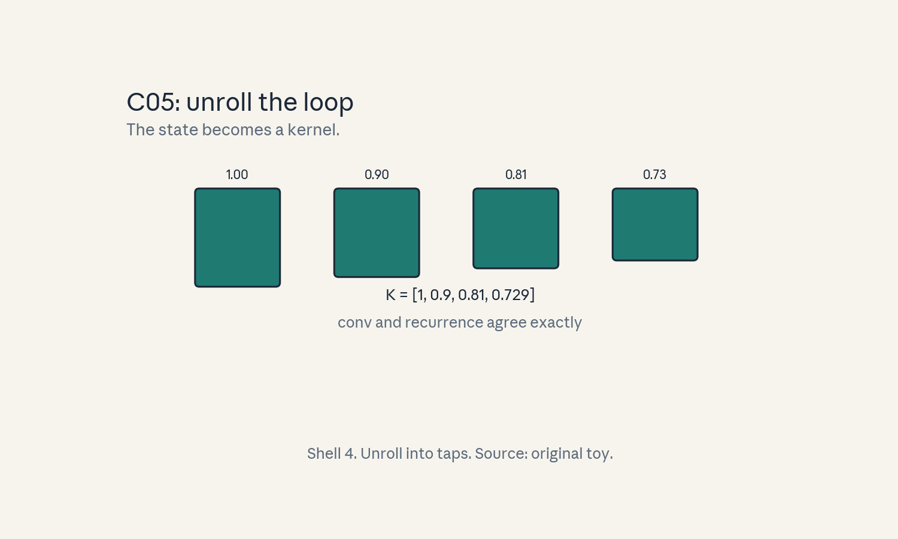
- Audit:
u07c05tof05. Before: recurrence. After: kernel. One rule: unroll the loop.
C06: scan
Source, scope, objectives, dependencies
Calendar anchor: Week 6, Nov 1, “Towards Input-Dependent Sequence Mixers” (the scan is the workhorse). Scope: parallel prefix for recurrences. Objective: run a scan on a toy and count the levels. Depends on C04, P16.
Motivating question and tiny toy
Question: the recurrence is sequential, the convolution view needs fixed A. Is there a third way? Toy: 8 positions, combine pairs in a tree.
Mental model
A scan is a tournament bracket. Pair up neighbors, combine each pair, repeat on the winners. Log2(8) = 3 rounds and every prefix is known. The combine rule must be associative: the bracket order cannot matter.
Objects, shapes, assumptions
- Elements e_i = (a_i, b_i) with x_i = a_i x_{i-1}
- b_i.
- Combine: (a2, b2) o (a1, b1) = (a2 a1, a2 b1 + b2). The lesson toy reduces the full sequence to its total with a pair tree. A full scan reuses the same combine to yield every prefix.
- Assumption: the combine is associative (it is: function composition).
Derivation
For the SSM: a_i = A (fixed per step in the toy), b_i = B x_i. Combine is associative because each pair is an affine map x -> a x + b and composition of affine maps is associative. 8 elements: level 1 makes 4 pairs, level 2 makes 2, level 3 makes 1: total work ~2n, depth 3 = log2 n. Each position’s prefix falls out of the tree.
Computed example
Toy: A = 0.9, B x = [1, 0, 1, 0, 0.5, 0, 0, 0.5]. Sequential gives the prefix states. The tree reproduces the final state b = 1.9333. Depth 3, work 7 combines vs 8 sequential steps: less sequential depth for the total. A full Blelloch scan yields all 8 prefixes with about 2n work in the same depth. Lab-07 asserts the tree total equals the sequential final state.
Implementation and checks
def combine(p, q):
a2, b2 = q
a1, b1 = p
return (a2 * a1, a2 * b1 + b2)
xs = [1, 0, 1, 0, 0.5, 0, 0, 0.5]
els = [(0.9, v) for v in xs]
while len(els) > 1:
els = [combine(els[i], els[i+1])
for i in range(0, len(els), 2)]
a, b = els[0]
assert abs(b - 1.9333) < 0.001
Check: the final pair’s b equals the last prefix state. Lab-07 asserts the scan equals the sequential run elementwise.
Complexity and costs
Work O(n), depth O(log n). Needs the associative form. Pays extra total work for less sequential depth.
Nearest alternative and selection boundary
Nearest alternative: convolution view (C05). Selection boundary: scan for input-dependent A. convolution for fixed A (simpler, FFT-fast).
Failure case and counterexample
Broken assumption: “the combine is associative.” Counterexample: a combine with rounding at each level (quantized scan): order changes the result and the tree disagrees with the loop.
Research reading and falsifiable extension
Reading: the Nov 1 input-dependent-mixers note. Falsifiable extension: benchmark scan vs loop vs conv-view at several T on CPU. Hypothesis: scan wins in the middle band (loop too serial, conv-view FFT overhead too high). Report the band.
Exercises
- E26 (recall): write the combine rule.
- E27 (numerical): toy above. Compute the final state both ways.
- E28 (failure diagnosis): tree and loop disagree. What property failed?
- E29 (counterfactual): n is not a power of 2. What changes?
- E30 (research): state the middle-band hypothesis.
Visual units
- Figure
u07_c06_bracket.png: 8 leaves, 3 combine levels. Source: original toy. Shell 1.
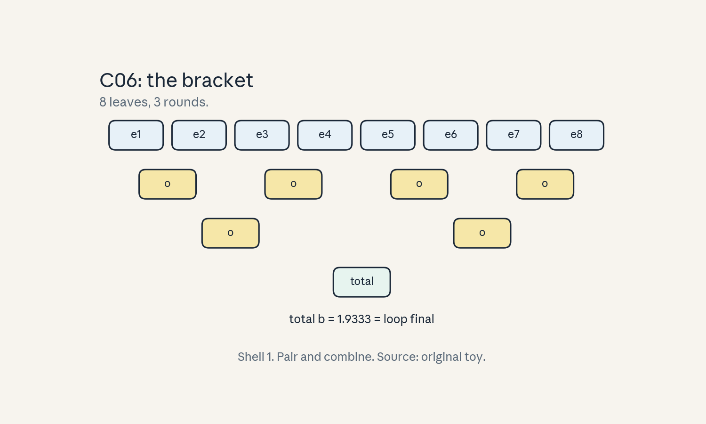
- Audit:
u07c06tof06. Before: 8 steps. After: 3 rounds. One rule: combine pairs.
C07: FFT
Source, scope, objectives, dependencies
Calendar anchor: Week 6, Oct 28, “Fast fourier transforms: efficient algorithms and hardware implementation”, and Nov 1, “the FFT-Convolution Theorem”. Scope: the FFT as the convolution engine. Objective: compute the FLOP ratio for a toy convolution. Depends on P04, C05.
Motivating question and tiny toy
Question: convolution by definition costs n^2. How does the FFT break that? Toy: n = 1024.
Mental model
Convolution in time is multiplication in frequency. The FFT changes basis in n log n: go to frequency, multiply pointwise, come back. The theorem does the work. The FFT just makes the basis change cheap.
Objects, shapes, assumptions
- FFT: n log2 n operations for size n.
- Conv via FFT: 2 forward + 1 inverse = 3 FFTs.
- Assumption: n is a power of 2 (pad if not).
Derivation
Naive: n^2 = 1,048,576 multiply-adds. FFT path: each FFT costs n log2 n = 10240. Three of them = 30,720. Plus n pointwise multiplies = 1024. Total 31,744. Ratio = 1,048,576 / 31,744 = 33.0x. The theorem: conv(x, k) = IFFT(FFT(x) * FFT(k)).
Computed example
Toy above: 33.0x fewer operations. N = 1M: naive 1e12, FFT path 3 * 1M * 20 = 6e7: ratio 16,667x. The bigger n, the bigger the win. Lab-07 asserts the 33.0x ratio.
Implementation and checks
import numpy as np
rng = np.random.default_rng(7)
n = 64
x = rng.standard_normal(n)
k = rng.standard_normal(n)
y_naive = np.convolve(x, k)[:n]
m = 2 * n # pad: the raw product is circular
y_fft = np.fft.ifft(np.fft.fft(x, m) *
np.fft.fft(k, m)).real[:n]
assert np.allclose(y_naive, y_fft, atol=1e-8)
ratio = n**2 / (3 * n * np.log2(n) + n)
assert abs(ratio - 3.368) < 0.01 # n=64 toy, n=1024
# gives 33.0x per the derivation above
Check: FFT convolution matches naive to 1e-8. Lab-07 asserts the theorem on the n=64 toy and the 33.0x ratio at n=1024.
Complexity and costs
O(n log n) time, O(n) memory. Bit-reversal and twiddle factors are the implementation detail. numerical error grows like sqrt(log n).
Nearest alternative and selection boundary
Nearest alternative: direct convolution (C01). Selection boundary: FFT when n is large and the kernel is dense. Direct when the kernel is short (K < ~64, a matmul wins).
Failure case and counterexample
Broken assumption: “n is a power of 2.” Counterexample: n = 1000 (prime-ish factors): the FFT pads to 1024 and the win shrinks. A bad implementation pads to 2048 and loses to direct.
Research reading and falsifiable extension
Reading: the Oct 28 FFT session. Falsifiable extension: time direct vs FFT convolution across n. Hypothesis: crossover near n = 128-512 on this CPU. Report the measured crossover.
Exercises
- E31 (recall): state the convolution theorem.
- E32 (numerical): n=1024. Compute the naive count, the FFT-path count, and the ratio.
- E33 (failure diagnosis): FFT conv is slower than direct at n=64. Why?
- E34 (counterfactual): the kernel has 3 nonzero taps. Which method wins?
- E35 (research): state the crossover hypothesis.
Visual units
- Figure
u07_c07_fft.png: n^2 grid vs three n log n bars, 33x label. Source: original toy. Shell 8.
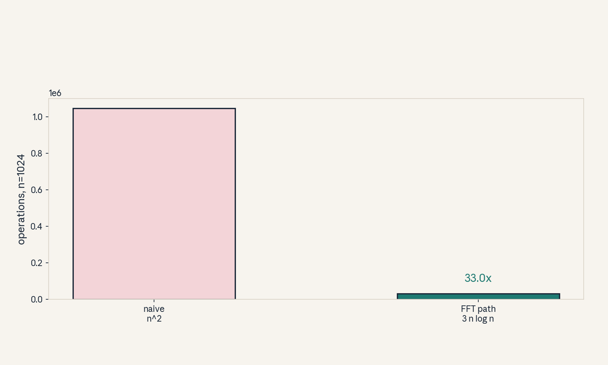
- Audit:
u07c07tof07. Before: time domain. After: frequency domain. One rule: multiply, do not convolve.
C08: numerical stability
Source, scope, objectives, dependencies
Calendar anchor: Week 6, Nov 1, “State Space Models Walkthrough” (stability of A). Scope: what the transition magnitude does over long sequences. Objective: compute growth and decay on a toy. Depends on P04, C04.
Motivating question and tiny toy
Question: the state multiplies by A every step. What happens after 1000 steps? Toy: A = 0.99 vs A = 1.01. Also discretize: A_c = -1, step 0.1.
Mental model
A is compound interest on the state. Below 1 the past melts away. Above 1 it explodes. Stable models park A just under 1 (long memory, no explosion) or discretize a stable continuous A.
Objects, shapes, assumptions
- Growth: A^n after n steps.
- Discretization: A_d = exp(step * A_c).
- Assumption: scalar A (the diagonal case, the matrix case needs eigenvalues inside the unit disk).
Derivation
0.99^1000 = e^{1000 ln 0.99} = e^{-10.05} = 4.32e-5: the past is gone. 1.01^1000 = e^{9.95} = 20,959: overflow territory in fp16 (max 65,504) after a few more steps. Discretization: exp(0.1 * -1) = 0.9048: a stable continuous decay of rate 1 becomes a per-step factor under 1.
Computed example
Toy above: 4.32e-5 vs 20,959 after 1000 steps. fp16 overflows at 65,504: the 1.01 model dies at step 1115 (1.01^1115 = 65,816). Lab-07 asserts the death step.
Implementation and checks
import math
assert abs(0.99**1000 - 4.32e-5) < 1e-7
assert abs(1.01**1000 - 20959) < 2
Ad = math.exp(0.1 * -1)
assert abs(Ad - 0.9048) < 0.001
death = next(n for n in range(1000, 1200)
if 1.01**n > 65504)
assert death == 1115
Check: the death step is exact integer search. Lab-07 asserts all four numbers.
Complexity and costs
No runtime cost. The cost is design: A must be parameterized to stay stable (negative real parts, exp discretization).
Nearest alternative and selection boundary
Nearest alternative: normalize the state every step. Selection boundary: stable A by construction (cleaner). Runtime normalization when A must stay input-dependent and wild.
Failure case and counterexample
Broken assumption: “eigenvalues stay inside the disk.” Counterexample: a learned dense A drifts past 1 during training: loss looks fine, then long-sequence eval explodes.
Research reading and falsifiable extension
Reading: the Nov 1 SSM walkthrough. Falsifiable extension: train a toy SSM with free vs exp-parameterized A, eval at 10x train length. Hypothesis: free A explodes, exp-A holds. Report both.
Exercises
- E36 (recall): write the growth formula and the discretization.
- E37 (numerical): toy above. Compute both 1000-step values and the fp16 death step.
- E38 (failure diagnosis): long eval explodes, short eval is fine. Name the suspect.
- E39 (counterfactual): A_c = +1. What does the discretization give?
- E40 (research): state the free-vs-exp hypothesis.
Visual units
- Figure
u07_c08_stability.png: two curves, decay to zero and blowup past the fp16 line. Source: original toy. Shell 7.
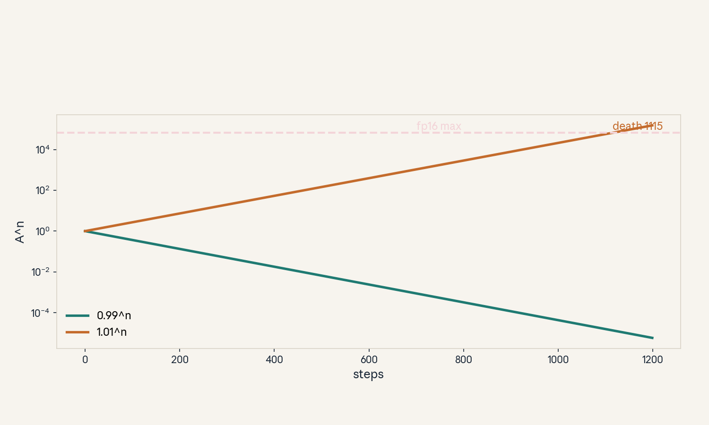
- Audit:
u07c08tof08. Before: A. After: A^1000. One rule: compound the factor.
C09: causal constraints
Source, scope, objectives, dependencies
Calendar anchor: Week 6, Nov 1, “Introduction to Convolutions, Fourier Transforms” (causality in sequence models). Scope: keeping the future out of the past. Objective: show leakage on a toy and fix it. Depends on C01, C05.
Motivating question and tiny toy
Question: a centered kernel sees the future. Why is that fatal for generation? Toy: x = [1, 2, 3, 4], centered kernel [0.5, 1, 0.5] vs causal kernel [1, 0.5, 0.25].
Mental model
Generation is a one-way street: position t may only read positions <= t. A centered kernel is a rear-view mirror pointed forward: it peeks. The causal mask (or causal kernel) is the rule that the future stays unwritten until its turn.
Objects, shapes, assumptions
- Centered: y_t uses x_{t-1}, x_t, x_{t+1}.
- Causal: y_t uses x_t, x_{t-1}, x_{t-2}.
- Assumption: autoregressive use (training must match inference order).
Derivation
Centered at t=1 (x=2): y = 0.51 + 12 + 0.53 = 4.0: the output at position 1 used x_2 = 3, the future. Causal at t=1: y = 12 + 0.5*1 = 2.5: only past and present. Train with the centered kernel and the model learns to cheat. At inference the future is absent and quality collapses.
Computed example
Toy above: centered y_1 = 4.0 (leaks), causal y_1 = 2.5 (clean). Full causal outputs: [1.0, 2.5, 4.25, 6.0]. Lab-07 asserts the leak value.
Implementation and checks
import numpy as np
x = np.array([1.0, 2, 3, 4])
centered = np.convolve(x, [0.5, 1, 0.5],
mode="same")
causal = np.convolve(x, [1, 0.5, 0.25])[:4]
assert abs(centered[1] - 4.0) < 1e-9 # leaks x_2
assert abs(causal[1] - 2.5) < 1e-9
Check: mode=”same” centers the kernel (the leak). Lab-07 asserts both values.
Complexity and costs
Causality is free: shift the kernel, mask the matrix. The cost is vigilance: one wrong padding mode leaks.
Nearest alternative and selection boundary
Nearest alternative: bidirectional (non-causal) for encoding tasks. Selection boundary: causal for generation. Bidirectional only when the full sequence exists at inference.
Failure case and counterexample
Broken assumption: “padding is innocent.” Counterexample: “causal” padding on the wrong side: np.convolve default centers the second array. A one-line padding bug leaks the future and eval scores look suspiciously good.
Research reading and falsifiable extension
Reading: the Nov 1 convolutions session. Falsifiable extension: train a toy next-token model with centered vs causal kernels. Hypothesis: centered trains to lower loss but generates garbage. Report both.
Exercises
- E41 (recall): define causal vs centered.
- E42 (numerical): toy above. Compute y_1 both ways and name the leaked value.
- E43 (failure diagnosis): eval is great, generation is garbage. What leaked?
- E44 (counterfactual): the task is fill-in-the- blank. Does causality still bind?
- E45 (research): state the centered-vs-causal hypothesis.
Visual units
- Figure
u07_c09_causal.png: kernel taps with the future tap crossed out. Source: original toy. Shell 7.
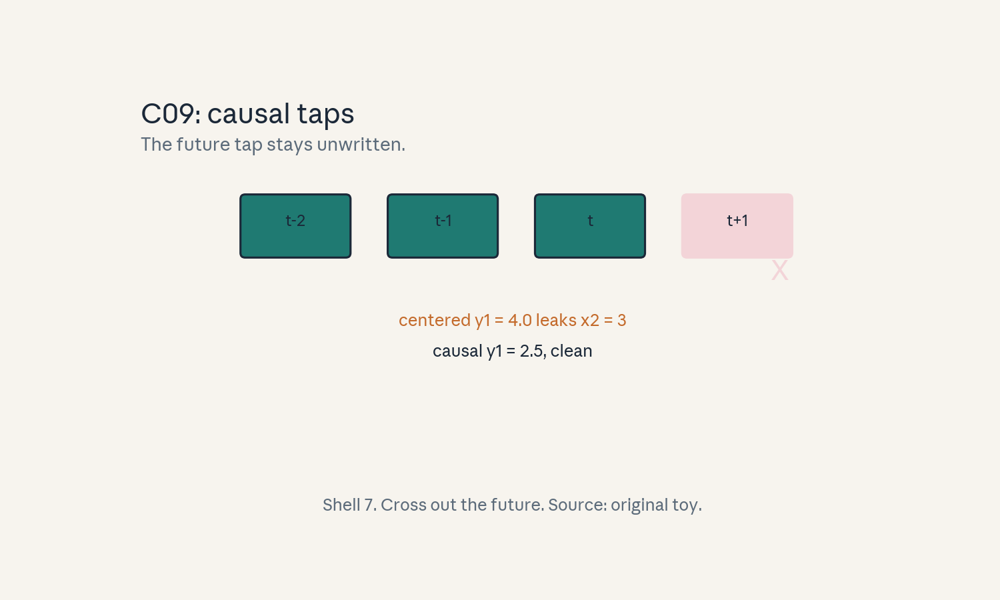
- Audit:
u07c09tof09. Before: centered. After: causal. One rule: no future taps.
C10: expressivity tradeoffs
Source, scope, objectives, dependencies
Calendar anchor: Week 6, Nov 1, “Tradeoffs of Transformer vs. rNN vs. cNN Training & Inference Efficiency, and Inductive Biases” and “Limitations of State Space Models”. Scope: what subquadratic models cannot do. Objective: bound the memory of a copy task. Depends on C02, C03, C04.
Motivating question and tiny toy
Question: linear models are cheap. What do they give up? Toy: exact copy of a length-T sequence. Softmax attention vs a d x d linear state, d = 128, T = 8192.
Mental model
Softmax attention is a filing cabinet with T drawers: every token gets its own slot. A linear state is a whiteboard of d^2 numbers: all tokens share it. Exact copy needs T distinguishable slots. The whiteboard holds d^2 = 16,384 numbers vs T = 8,192 tokens: it fits here, but barely, and only as a blur.
Objects, shapes, assumptions
- Copy task: output position t must reproduce an arbitrary earlier token exactly.
- Softmax capacity: T slots (the T x T matrix).
- Linear capacity: d^2 state numbers.
- Assumption: worst-case inputs (adversarial distinct tokens).
Derivation
Softmax attention can route token i to position t with a one-hot row: exact copy, O(T^2) cost. Linear state: S = sum phi(k_i) v_i^T has d^2 = 16,384 degrees of freedom. T = 8,192 tokens each need d = 128 numbers for exact recall: 8,192 * 128 = 1,048,576 numbers needed vs 16,384 held: 64x short. Sharp selection (one-hot) is the failure: smooth kernels blur.
Computed example
Toy above: need 1,048,576 numbers, have 16,384: the state holds 1.6% of what exact copy needs. Induction heads (copy the token after a match) are the classic casualty: softmax does them, linear approximates them. Lab-07 asserts the 64x shortfall.
Implementation and checks
T, d = 8192, 128
need = T * d
have = d * d
assert need == 1048576
assert have == 16384
assert need // have == 64
Check: integer arithmetic, no rounding. Lab-07 asserts the ratio.
Complexity and costs
The tradeoff is the point: pay T^2 for exact pairwise routing, or pay T d^2 for a blur.
Nearest alternative and selection boundary
Nearest alternative: hybrid (a few softmax layers among linear ones). Selection boundary: pure linear when the task is smooth and long. Hybrid or softmax when exact recall decides quality.
Failure case and counterexample
Broken assumption: “the blur is enough.” Counterexample: passkey retrieval (find the number hidden at position 5000): the linear model’s blur misses it, softmax nails it.
Research reading and falsifiable extension
Reading: the Nov 1 limitations session. Falsifiable extension: passkey task at several depths, linear vs softmax. Hypothesis: linear accuracy falls with depth, softmax holds. Report the curves.
Exercises
- E46 (recall): define the copy capacity bound.
- E47 (numerical): toy above. Compute need, have, and the shortfall ratio.
- E48 (failure diagnosis): passkey retrieval fails on a linear model. Name the cause.
- E49 (counterfactual): d = 1024. Does the bound still bite at T = 8192?
- E50 (research): state the passkey hypothesis.
Visual units
- Figure
u07_c10_capacity.png: filing cabinet (T drawers) vs whiteboard (d^2 cells), 64x label. Source: original toy. Shell 8.
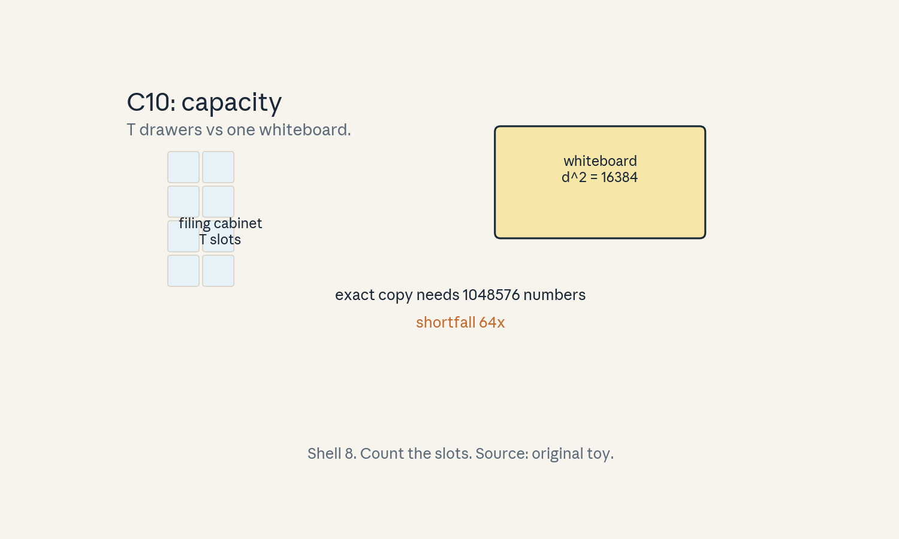
- Audit:
u07c10tof10. Before: full matrix. After: compressed state. One rule: count the slots.
C11: hardware realization
Source, scope, objectives, dependencies
Calendar anchor: Week 6, Oct 28, “Fast fourier transforms: efficient algorithms and hardware implementation”. Scope: what the hardware sees. Objective: compare the byte traffic of attention vs an SSM scan on a toy. Depends on P15, C02, C04.
Motivating question and tiny toy
Question: both models run on the same GPU. Why does the SSM use less memory traffic? Toy: T = 8192, d = 128, one head, fp16. SSM state N = 64 per channel.
Mental model
Attention ships the T^2 score matrix through HBM: the seating chart travels. The SSM scan keeps a small state in SRAM and streams the input once: the bucket stays on chip, only the water moves.
Objects, shapes, assumptions
- Attention HBM traffic: scores 256 MiB (fp32 toy. 128 MiB in fp16) per head, plus QKV.
- SSM: state N floats per channel, streamed.
- Assumption: the scan fuses into one kernel (no materialized intermediates).
Derivation
fp16 scores: 67.1M * 2 bytes = 134.2 MB per head per forward pass, read and written. SSM: state 64 floats * 4 bytes = 256 bytes per channel. 128 channels: 32 KiB resident in SRAM. Input streamed once: T * d * 2 bytes = 2.1 MB. Traffic ratio: ~64x less HBM movement. The roofline moves the SSM from memory-bound toward compute-bound.
Computed example
Toy above: attention ~134 MB of score traffic per head. SSM ~2.1 MB of streaming input plus 32 KiB of resident state. Ratio ~64x. Lab-07 asserts the byte counts.
Implementation and checks
T, d = 8192, 128
attn_bytes = T * T * 2
ssm_stream = T * d * 2
ssm_state = 64 * 4 * d
assert attn_bytes == 134217728
assert ssm_stream == 2097152
assert attn_bytes // ssm_stream == 64
Check: integer byte counts. Lab-07 asserts the 64x ratio.
Complexity and costs
The win is realized only with a fused scan kernel. An unfused loop materializes states and loses it.
Nearest alternative and selection boundary
Nearest alternative: FlashAttention (U04), which also avoids materializing scores. Selection boundary: SSM scan when the recurrence is the model. FlashAttention when softmax attention is the model.
Failure case and counterexample
Broken assumption: “the kernel is fused.” Counterexample: a naive PyTorch loop over the recurrence writes h_t to HBM each step: traffic returns to O(T N) and the advantage vanishes.
Research reading and falsifiable extension
Reading: the Oct 28 hardware session. Falsifiable extension: profile fused vs loop SSM on one GPU, measure HBM bytes. Hypothesis: fused moves ~64x fewer score-equivalent bytes. Report both.
Exercises
- E51 (recall): write both traffic formulas.
- E52 (numerical): toy above. Compute the three byte counts and the ratio.
- E53 (failure diagnosis): the SSM runs slow in PyTorch eager. Name the likely cause.
- E54 (counterfactual): SRAM halves. What breaks first?
- E55 (research): state the fused-vs-loop hypothesis.
Visual units
- Figure
u07_c11_traffic.png: HBM bars: 134 MB vs 2.1 MB. Source: original toy. Shell 5.
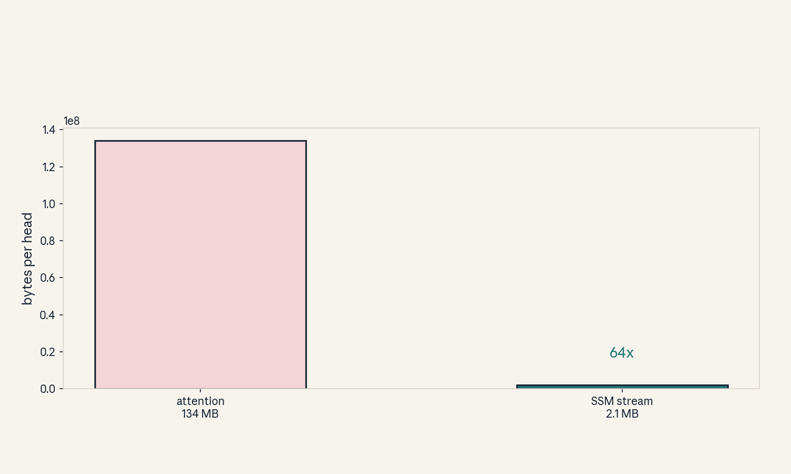
- Audit:
u07c11tof11. Before: score matrix. After: streamed state. One rule: keep the state on chip.
C12: workload comparisons
Source, scope, objectives, dependencies
Calendar anchor: Week 6, Nov 1, “Tradeoffs of Transformer vs. rNN vs. cNN Training & Inference Efficiency, and Inductive Biases”. Scope: the three-way comparison. Objective: fill the cost table for the lesson toy. Depends on C01-C11.
Motivating question and tiny toy
Question: which model for which job? Toy: T = 8192, d = 128, one head/layer. Compare transformer, SSM, and CNN (K = 512).
Mental model
Three tools, three bills. The transformer pays in pairs (T^2). The SSM pays in state (T d^2, tiny memory). The CNN pays in kernel width (T K d) and cannot see past K. Pick by the bottleneck: memory, exactness, or range.
Objects, shapes, assumptions
- Train FLOPs per layer-ish unit, decode state, context range.
- Assumption: single head/layer toy. Real models stack these.
Derivation
Transformer: 34.4 TFLOPs (C02 with values), state = KV cache O(T d). SSM: 2 T d^2 = 0.268 GFLOPs (C03-style count), state O(d^2) = 64 KiB. CNN K=512: 2 T K d = 2 * 8192 * 512 * 128 = 1.07 TFLOPs, range 512. Ratios: transformer / SSM = 128x in FLOPs. CNN sees 1/16 of the context.
Computed example
Toy table: | model | train FLOPs | state | range | |—|—|—|—| | transformer | 34.4 T | O(T d) | full | | SSM | 0.268 G | 64 KiB | full (faded) | | CNN K=512 | 1.07 T | O(K d) | 512 |
Lab-07 asserts the three FLOP numbers.
Implementation and checks
T, d, K = 8192, 128, 512
tr = 4 * T * T * d
ssm = 2 * T * d * d
cnn = 2 * T * K * d
assert tr == 34359738368
assert ssm == 268435456
assert cnn == 1073741824
Check: tr/ssm = 128. Lab-07 asserts the table.
Complexity and costs
The table is the decision tool. No single winner: each column has a champion.
Nearest alternative and selection boundary
Nearest alternative: hybrids. Selection boundary: transformer for exact recall at affordable T. SSM for long faded context. CNN for local patterns with parallel training.
Failure case and counterexample
Broken assumption: “one model fits all.” Counterexample: passkey at T=100k: transformer OOMs, CNN cannot reach, SSM blurs: the task needs a hybrid or retrieval (U10).
Research reading and falsifiable extension
Reading: the Nov 1 tradeoffs session. Falsifiable extension: build the three toys at small scale, measure time and a recall probe. Hypothesis: measured ratios match the table within 2x. Report all.
Exercises
- E56 (recall): fill the three-row table from memory.
- E57 (numerical): toy above. Compute the three FLOP counts and the transformer/SSM ratio.
- E58 (failure diagnosis): a CNN fails passkey at distance 5000, K=512. Expected?
- E59 (counterfactual): T drops to 512. Who wins now?
- E60 (research): state the measured-ratio hypothesis.
Visual units
- Figure
u07_c12_table.png: the three-row cost table as bars. Source: original toy. Shell 8.
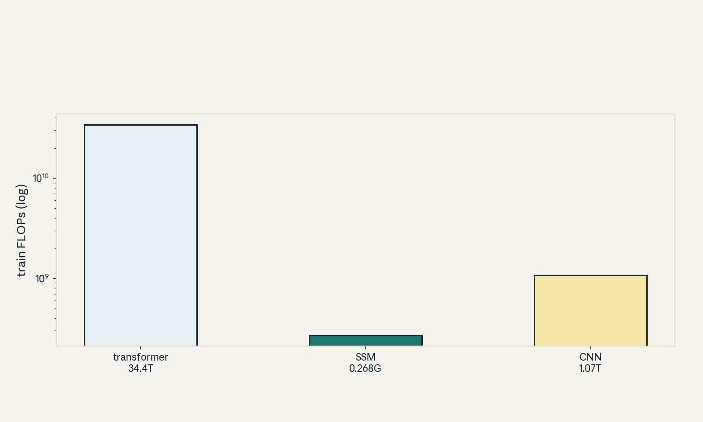
- Audit:
u07c12tof12. Before: three models. After: one table. One rule: count the same toy.
U07 chapter plate
Figure u07_chapter.png: the subquadratic ladder:
quadratic attention -> kernelized linear ->
SSM recurrence -> convolution view -> scan, with
FFT as the engine under the convolution view.
Source: original.
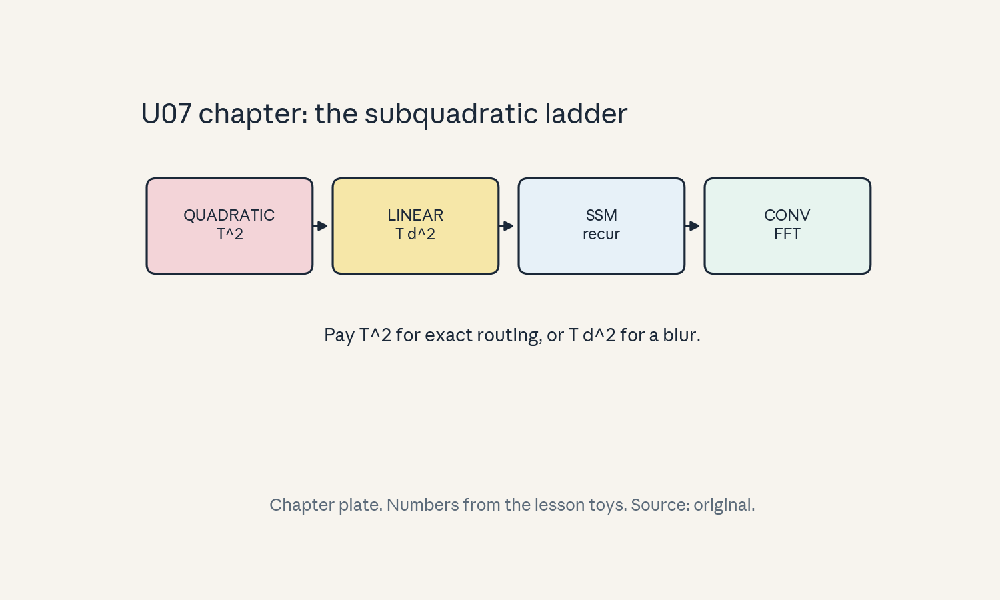
Unit-scope replication proposal (PROPOSED, not executed)
Course-level capstones live in capstones/. This
unit proposes: verify the recurrence/convolution/
scan triple identity on a random SSM, then measure
the FFT crossover where conv-view beats the
sequential loop. See lab-07.